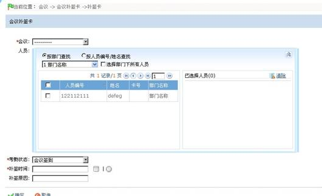
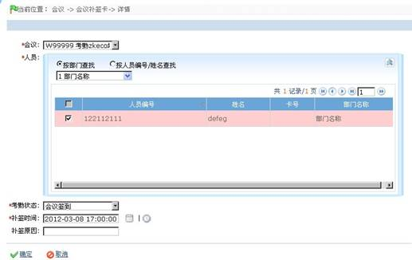

会议补签卡管理
1. 新增补签卡
（1）点击【会议】—【会议补签卡】—【补签卡】，进入如下图所示的页面：

各字段说明：
会议：点击 按钮，在下拉框中选择会议即可，如系统无会议，请参看会议管理，先进行会议添加；
按钮，在下拉框中选择会议即可，如系统无会议，请参看会议管理，先进行会议添加；
人员：可以通过两种方式来查找人员, 如系统中无人员，请参看会议人员管理，先进行人员添加；
a、按部门选择查找。在下拉菜单的部门列表中部门前面有一个复选框，选中之后，则选中该部门的所有人员，如果勾选【选择部门下所有人员】，则该部门的所有人员将全部选择，并显示在当前所选人员列表框中；
b、按人员编号/姓名查找。在查询框中输入要选择人员的姓名或者工号，单击查询，将符合条件的人员显示在当前所选人员列表框中。
考勤状态：单击考勤状态所在栏的按钮，在弹出的考勤状态下拉列表中选择会议签到，会议签退
补签时间：年月日的时间，具体到小时，分钟。
补签原因：输入补签卡的原因，没有限制字节。
（2）设置完成后，；若需保存，则单击【保存】；单击【取消】则放弃操作，并返回上一页面。
2. 编辑会议补签卡
（1）在会议补签卡页面，单击会议补签卡所在行的相关操作下的【编辑】，即可进入该会议补签卡的编辑页面，如下图所示：

（2）用户可根据需要修改该人员考勤状态，补签时间，具体操作同新增会议补签卡一致，此处不再重述。
3. 删除补签卡
（1）在会议补签卡页面，单击会议所在行的选择框 ，打钩选中（可多选），然后单击【删除】按钮，或直接单击会议补签卡所在行的相关操作下的【删除】按钮，进入如下图所示页面：
，打钩选中（可多选），然后单击【删除】按钮，或直接单击会议补签卡所在行的相关操作下的【删除】按钮，进入如下图所示页面：

（2）单击【确定】按钮，则删除被选中的会议补签人员；单击【取消】按钮，则放弃操作并返回上一页面。